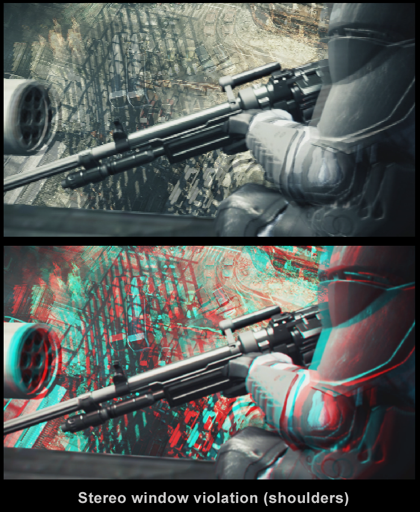
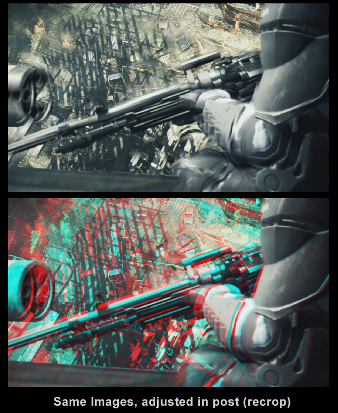
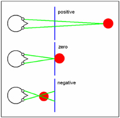

Overview
This Document will describe the fundamentals behind stereoscopic imaging and rendering for film and games. This document will also describe some of the underlying biology that allows for "Stereopsis" the biological ability to perceive depth.
Stereopsis - "Solid Sight"
Stereopsis and 3D vision are actually the same thing, an important binocular ability for people and animals that have it. It is the remarkable power of the visual sense to give an immediate perception of depth on the basis of the difference in points of view of the two eyes. It exists in those animals with overlapping optical fields, acting as a range finder for objects within reach. There are many clues to depth, but stereopsis is the most reliable and overrides all others. The sensation can be excited by presenting a different, properly prepared, view to each eye. The pair of views is called a stereopair or stereogram, and many different ways have been devised to present them to the eye. The appearance of depth in miniature views has fascinated the public since the 1840's, and still appears now and then at the present time.
To explain the process of stereoscopic vision we need to define a few things.
Interocular Distance
Also known as "interaxial separation" is quite simply put the distance between the camera lenses producing the left and right eye images. In humans this value is approximately 2.5" or 6.35cm.
Retinal disparity
Retinal Disparity refers to the small difference between the images projected on the two retinas when looking at an object or scene. This slight difference or disparity in retinal images serves as a binocular cue for the perception of depth. Retinal disparity is essential for stereoscopic depth perception as stereoscopic depth perception results from fusion of slightly dissimilar images. Due to the lateral displacement of our eyes, slightly dissimilar retinal images result from the different perception of the same object from each eye.
It should also be noted that there is a limited range that humans are able to "solve" 3d which can be different from person to person. There have been many studies done that measure these distances and the values can range from 8" to 30', or 20cm to 9meters.
Stereo Blindness
It has been reported that there is a percentage of the worlds population that cannot solve 3d but sources vary in the actual percentage from small section (5-10%) all the way to 15%.
Stereoscopic Imaging (Stereoscopy)
Stereoscopy defines the science and technology dealing with two-dimensional drawings or photographs that when viewed by both eyes appear to exist in three dimensions in space. A popular term for stereoscopy is 3D. Stereoscopic pictures are produced in pairs, the members of a pair showing the same scene or object from slightly different angles that correspond to the angles of vision of the two eyes of a person looking at the object itself. Stereoscopy is possible only because of binocular vision, which requires that the left-eye view and the right-eye view of an object be perceived from different angles. In the brain the separate perceptions of the eyes are combined and interpreted in terms of depth, of different distances to points and objects seen. Stereoscopic pictures are viewed by some means that presents the right-eye image to the right eye and the left-eye image to the left.
Stereoscopy Artifacts
As with any technology there are common problems that need to be addressed when working with stereoscopic imaging. Some of these include:
- Texturing
Problem: Often a scene looks fine until the texturing and lighting is added. The lighting reveals the depth setting on the shot and causes eye separation in the foreground elements.
Solution: Adjusting the position of the camera to remove the extreme foreground. - Incorrect reflections
Problem: Reflections look stuck to the object rather than going through them.
Solution: This happens when you mistakenly render the reflections with the wrong eye camera setting, which makes the reflections look like shadows stuck to the floor rather than going in depth beneath them. - Ghosting
Problem: A double Image.
Solution: When a little bit of light is leaking into the other eye, which results in a subtle double image. This is most noticeable when there is a combination of high contrast and a lot of eye separation. The main solution here is to verify the convergence and to maintain solvable 3d. - Discomfort/Nausea
Problem: When some people view 3D movie, the binocular disparity of their eyes is confused by the fact that the image is physically far away from them, but appears to be much closer. This knocks off the balance of their vestibular system, which is what keeps each of us from losing our orientation while performing normal activities, such as watching a movie or playing games. Although most of us don't have this problem when watching 3d, some people may experience this discomfort.
Solution: There are many proposed solutions to this problem and some include using a 4% divergence rule which essentially says that anything outside of 2% in front or 2% behind the screen will cause some sort of discomfort. - Fusion Failure (Loss of 3D)
Problem: When the stereo pair is too dissimilar from each other the brain cannot "solve" the 3d and the singular stereo image is lost.
Solution: Do not over diverge the stereo pair.
Convergence - What is it
The standard definition is 'when both your eyes focus on the same object, the images from each converge on that object.' The angle of convergence is smaller when looking at far away objects; things say, farther than 10 meters. We sometimes use convergence interchangeably with other terms like Parallax, etc. Really only toe-in stereo rigs, where each camera rotates can have a convergence angle.
Stereo Window - What is it
This is the plane that is the picture through which the stereo image is seen (like the TV screen). The Stereo Window is often set at the closest object to the screen. When an object appears in front of the stereo window and is cut off by the edges of the screen, this is termed a Stereo Window Violation. In the example below, we want our eyes to look deep into the image, but because the gun is close, we set the Stereo Window on this, because if we set it on the background, we would be in violation.
In this example, the shoulder is in violation because it is in front of the stereo window, but touching the edge of frame:
 |  |
Now the shoulder is not penetrating the stereo window.
Why converge on the focal point of your scene? What is ghosting/crosstalk?
'Ghosting' is when some of the image from one eye 'leaks' into the other eye. (Also called crosstalk) Only in the best case scenario is there zero ghosting when viewing stereoscopic images or video. When you have no control over the hardware that your output will be viewed on, it's best to converge in the vicinity of the thing you want the people to look at, as eyes work in real life. More importantly, the stereo window should definitely be set to this. In parallel situations where you lack convergence, you can set the stereo window to the focal point if it is pleasing to the eye, as this will also work to eliminate any ghosting. (as long as this does not cause a Stereo Window Violation) Every time you look at something, the human eye adjusts the convergence angle, sets focus, and adjusts the stereo window.
Convergence has more to do with the relationship and range of the nearest definable near point to the furthest definable far point. There are exceptions, but normally you would first consider the far point, then the near point, then what is in between when setting convergence, always keeping the far point from having too wide a deviation along the horopter (artificial horizon line) in the particular scene. There are many rules to getting convergence right, like some people say that you should not converge in a way that there is ever 63mm or 2-1/2 inches positive parallax on the screen for a long time. Don't worry about any of these rules for now, as CryENGINE converges on nothing, because the current implementation is parallel.
Convergence and the Stereo Window
In the examples below, the Stereo Window is blue, the convergence point red, and the convergence angle green. When something converges in front of the stereo window, it is called 'negative, when it is behind, positive.
As mentioned before, when something is negative, but also touching the sides of the frame, this is a Window Violation. The current CryEngine3 s3D implementation is parallel and not toe-in.
